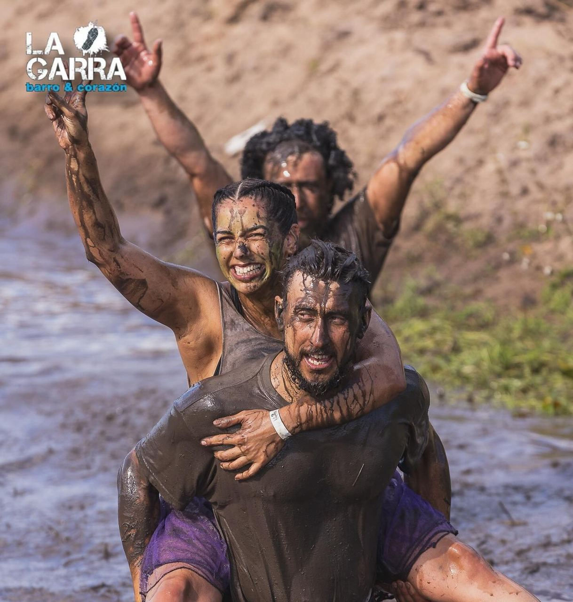
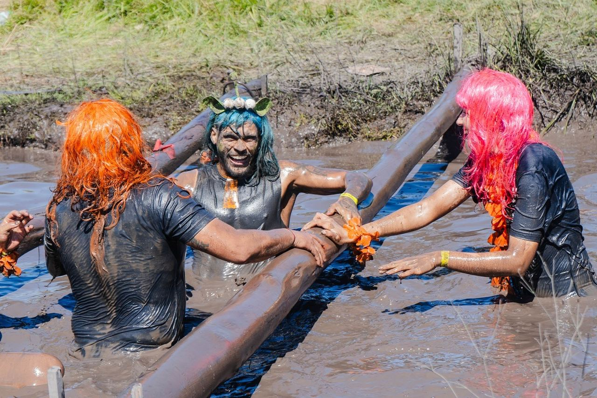
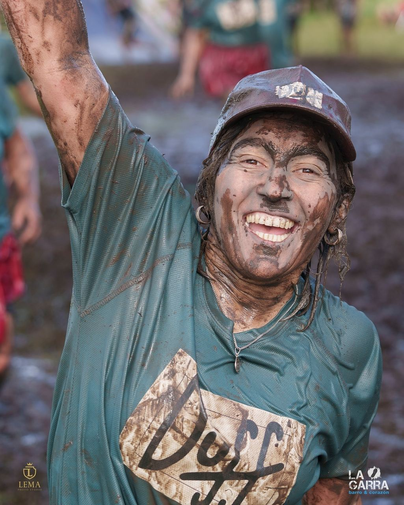
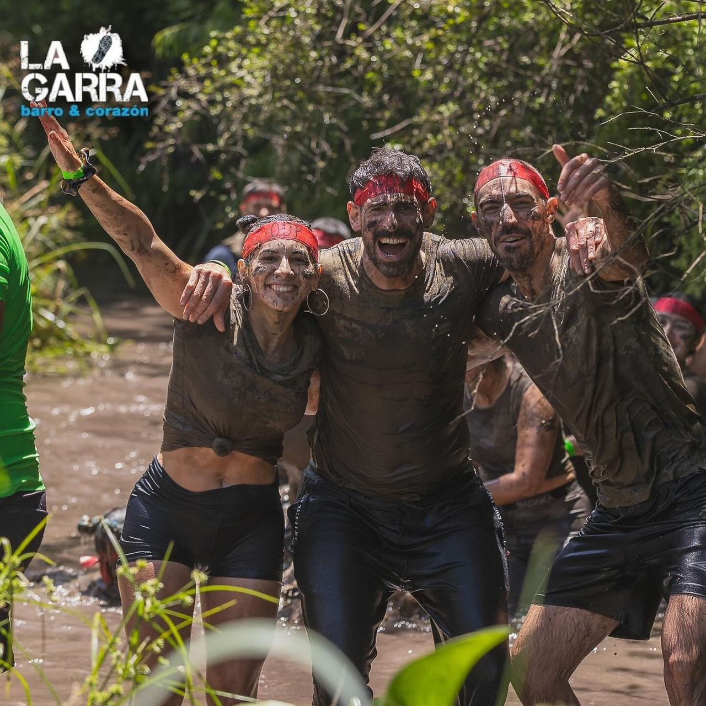
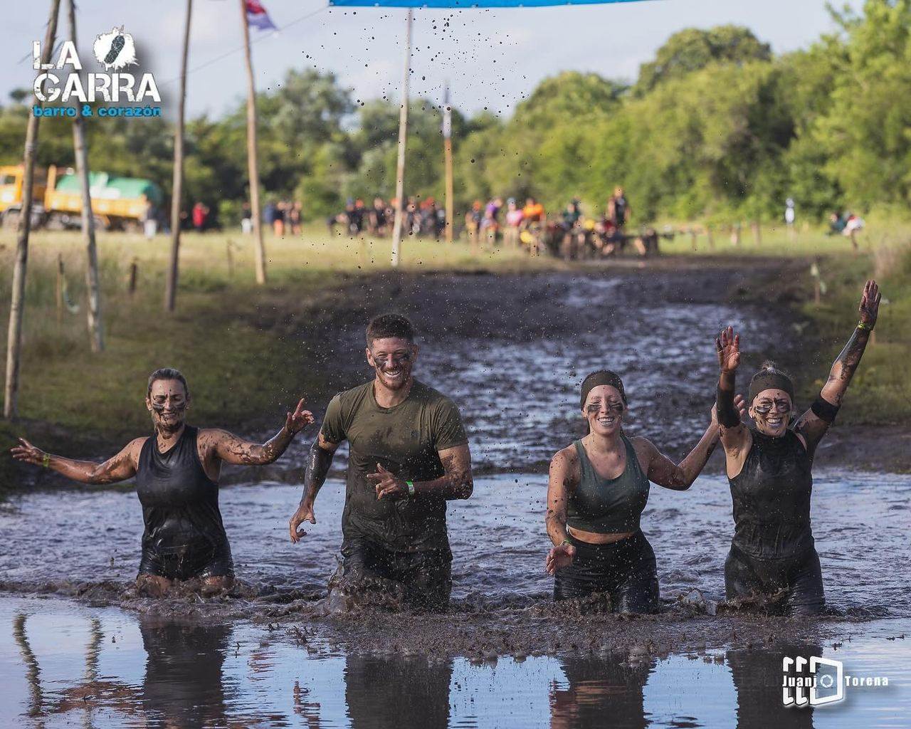
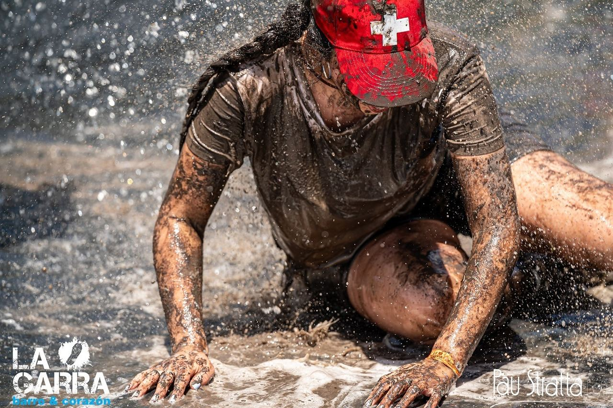
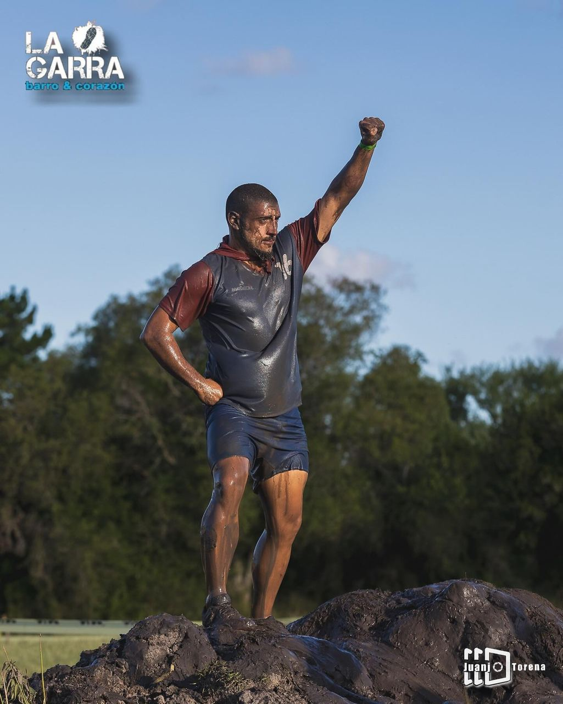
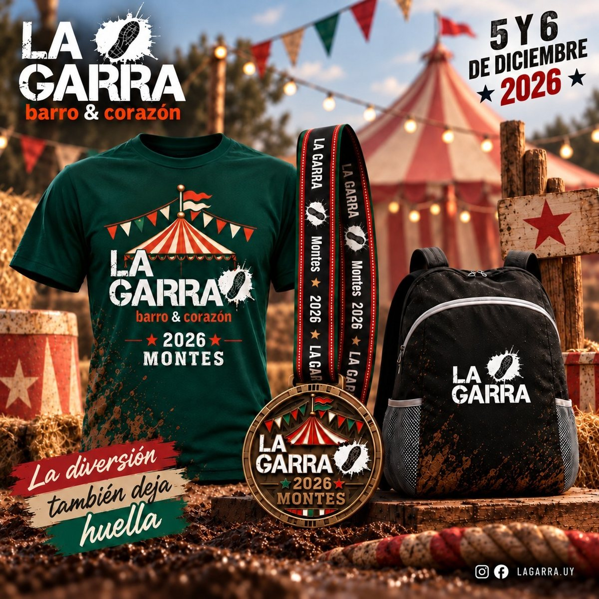

La Garra 2026
Montes
La fiesta del barro te espera.
Fecha5 y 6 de diciembre
LugarMontes, Canelones

La experiencia
Ensuciarse sin miedo
Hay experiencias que se viven una vez… y otras a las que querés volver todos los años.
La Garra Barro&Corazón es la edición más esperada, donde miles de personas llegan con un mismo objetivo: olvidarse de todo por un día, ensuciarse sin miedo y disfrutar junto a su equipo.
Pozos de barro, agua, trepadas, desafíos, música, animación y un entorno natural único se combinan para crear una experiencia que va mucho más allá de una carrera.
Al final del recorrido no recordarás cuántos obstáculos pasaste, sino las personas con las que reíste, el barro compartido y cada momento que hizo única la experiencia.
Porque las huellas más importantes no quedan en el suelo… quedan en quienes las viven.

Ensuciarse sin miedoGalería
Así se vive






Entrega de kits
Retiro de kits
- Martes y miércoles
1 y 2 de diciembre
9:30 a 19:30 hs
Centro de Entrenamiento de Deportes de Combate (CEDEC)
Av. Br. José Batlle y Ordóñez 2326, esq. Av. Italia, Montevideo - Sábado y domingo
5 y 6 de diciembre
Desde las 10:00 hs
Parque Municipal de Montes
Ruta 81 km 97, Montes, Canelones
Reglamento
Reglamento oficial y deslinde de responsabilidad
Antes de inscribirte
Preguntas frecuentes
¿Cómo participar en La Garra Barro&Corazón?
Requisitos
- Equipos: mínimo 3 integrantes, sin máximo
- Edad: desde 13 años
- Menores de 18: deben participar acompañados por un mayor responsable
¿Por qué es solo para mayores de 13 años?
Por seguridad y responsabilidad.
Los circuitos incluyen obstáculos, barro y agua, por lo que requieren cierta autonomía y cuidado personal.
¡Queremos que todos disfruten al máximo, siempre de forma segura y divertida!
¿Cómo inscribirse?
Debés seguir estos pasos:
- Completar el formulario de inscripción desde el botón Inscripción.
- Abonar el total del equipo en un único pago, según el valor vigente en la fecha del pago.
- Subir comprobante de pago para finalizar la inscripción del grupo.
Los datos de pago llegan en el mail de confirmación.
Costos de inscripción (por participante)
Con camiseta oficial incluida.
- Franja 1: $1.300 – primeros 500 pagos o hasta el 25/09.
- Franja 2: $1.550 – del 26/09 al 27/10.
- Franja 3: $1.850 – del 28/10 al 24/11 o hasta agotar cupos.
El pago se realiza por el total del grupo.
Promo: consultar descuento por participación en 2 o las 3 Garras. Incluye un kit con camiseta por cada edición. El descuento de la promo se aplica únicamente a los participantes que se inscriben a dos o las tres ediciones.
¿Qué incluye la inscripción?
Tu inscripción incluye:
- Camiseta oficial del evento (talle sujeto a disponibilidad de stock)
- Regalo exclusivo de La Garra Barro
- Pulsera identificatoria correspondiente a tu turno de largada
- Medalla Finisher al completar el recorrido
- Productos y obsequios de sponsors
- Hidratación durante el recorrido y en la llegada
- Servicio de guardabultos
- Carpas de vestuario
- Baños químicos
- Cobertura con fotógrafos oficiales
- Acceso a la plaza gastronómica (comidas y bebidas)
- Animación y entretenimiento en vivo
- Cobertura médica con ambulancias y personal de asistencia durante todo el evento
¿Son muy exigentes los obstáculos?
No, no son muy exigentes.
- Correr por barro y agua
- Trepar cuerdas o escaleras
- Arrastrarse por zonas con agua y barro
- Saltar pequeños obstáculos
No necesitás entrenamiento especial: con actitud y ganas lo superás.
¿Quién gana?
- En La Garra nadie pierde: no hay cronómetro, ni tiempos, ni podios.
- Se premian los equipos más divertidos, mejores disfraces y grupos más originales.
¿Se suspende por lluvia?
- No se suspende por lluvia.
- Puede postergarse solo con tormenta eléctrica o alerta meteorológica.
- La organización lo comunicará en redes sociales.
¿Qué vestimenta usar?
- Disfraces, uniformes, pelucas, accesorios… todo lo que haga destacar a tu grupo. ¡Vale todo!
- Usar ropa cómoda que puedas mojar y embarrar.
¡Diviértanse creando su look!
Entrega de kits
Las fechas, horarios y lugares están en Retiro de kits.
Importante
- Presentar el reglamento firmado por todos los integrantes.
- Puede retirar una sola persona el kit completo del equipo.
- Participantes del interior pueden retirar los días de la carrera desde las 10:00.
Turnos de participación
Sábado 5 de diciembre
12:00 – 12:30 – 13:00 – 13:30 – 14:00 – 14:30 – 15:00 – 15:30 – 16:00 – 16:30 – 17:00
Domingo 6 de diciembre
12:00 – 12:30 – 13:00 – 13:30 – 14:00 – 14:30 – 15:00 – 15:30 – 16:00 – 16:30 – 17:00
Formas de pago
Abonar el total del grupo en ABITAB.
- Caja ABITABNet 6758 La Garra 2026.
- Los grupos deben realizar un único pago por el total.
- Es obligatorio subir en la web de La Garra el comprobante de pago.
Consultar por forma de pago para grupos de más de 30 inscriptos.
Talles de camisetas
Revisar bien los talles antes de elegir.
No se podrán cambiar luego de la inscripción. Talles hasta agotar stock o cupos.
- Unisex: S – M – L – XL – XXL
- Entallada: 1 – 2 – 3 – 4
Recordá
La Garra no es una carrera.
Es una experiencia única para embarrarse, reírse y vivirla en equipo.